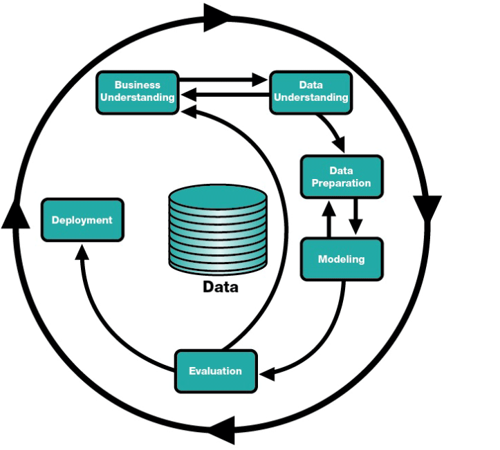

PROSES DATA MINING
Prosedur yang digunakan untuk melakukan pemodelan dan analisis data mining telah mengalami transformasi panjang dari domain penelitian akademis menjadi proses industri yang sistematis yang dilakukan oleh analis bisnis dan kuantitatif. Beberapa metodologi telah diusulkan untuk menuangkan langkah-langkah pengembangan dan penerapan model data mining ke dalam proses yang terstandarisasi. Berbagai metodologi data mining membentuk aktivitas yang dilakukan dalam analisa data yang khas menjadi serangkaian langkah atau tugas yang logis. Dua dua metodologi utama mendominasi praktik data mining yaitu CRISP dan SEMMA.
CRISP, yang merupakan singkatan dari Cross Industry Standard Process untuk data mining, adalah inisiatif dari konsorsium vendor perangkat lunak dan pengguna industri teknologi data mining untuk menstandarisasi proses data mining. Dokumen CRISP asli dapat ditemukan di http://www.crisp-dm.org/. Di sisi lain, SEMMA, yang merupakan singkatan dari Sample, Explore, Modify, Model, Assess, telah dikampanyekan oleh SAS Institute. SAS telah meluncurkan platform perangkat lunak data mining (SAS Enterprise Miner) yang mengimplementasikan SEMMA. Untuk deskripsi lengkap tentang SEMMA dan SAS Enterprise Miner, kunjungi situs web SAS: http://www.sas.com/.
Selain SEMMA dan CRISP, banyak metodologi lain mencoba melakukan hal yang sama, yaitu memecah proses data mining menjadi urutan langkah-langkah yang harus diikuti oleh analis untuk tujuan untuk menstandarisasi langkah-langkah analisa data.
Semua metodologi mengandung serangkaian tugas utama yaitu
Mengumpulkan data yang relevan yang diekstraksi dari database atau data warehouse ke dalam satu tabel yang berisi semua variabel yang dibutuhkan untuk pemodelan. Tabel ini umumnya dikenal sebagai mining view atau rollup file. Ketika ukuran data tidak dapat ditangani secara efisien oleh alat pemodelan data yang tersedia, maka teknik sampling digunakan dalam beberapa kasus untuk analisa data
Melakukan eksplorasi data untuk mendapatkan beberapa wawasan tentang hubungan di antara data dan untuk membuat ringkasan sifat-sifatnya. Ini dikenal sebagai EDA (Exploratory Data Analysis).
Melakukan transformasi data atau secara umum melakukan rekayasa fitur untuk mempersiapkan variabel-variabel ataru fitur yang disesuaikan dengan model yang direncanakan.
Merencanakan dan mengembangkan model data mining sesuai dengan tujuan analisa dan proses pelatihan dengan memperhatikan jenis variabel atau fitur yang terlibat. Tidak semua variabel yang tersedia digunakan dalam fase pemodelan. Oleh karena itu, prosedur reduksi data sering dipanggil untuk memilih set variabel yang paling berguna.
Model data mining dievaluasi dan model dengan kinerja terbaik dipilih menurut beberapa kriteria kinerja.
Biasanya, langkah-langkah ini dilakukan secara iteratif, dan tidak harus dalam urutan linier yang disajikan. Sebagai contoh, seseorang mungkin mengekstrak mining view, melakukan EDA, membangun seperangkat model, dan kemudian, berdasarkan hasil evaluasi model-model ini, memutuskan untuk memperkenalkan serangkaian transformasi dan langkah-langkah reduksi data dalam upaya untuk meningkatkan kinerja model.
Dari lima langkah dalam proses data mining, langkah-langkah ekstraksi dan persiapan data dapat memakan waktu hingga 80% dari waktu proyek. Selain itu, untuk menghindari situasi “garbage in, garbage out”, kita harus memastikan bahwa kita telah mengekstraksi data yang tepat dan paling berguna. Oleh karena itu, ekstraksi dan persiapan data harus menjadi prioritas dalam perencanaan dan pelaksanaan proyek data mining.
Cross Industry Standard Process (CRISP)
Cross Industry Standard Process adalah standar proses data mining yang digunakan untuk melakukan penambangan data berdasarkan hasil konsorsium vendor perangkat lunak dan pengguna industri teknologi data mining , yang dikenal sebagai CRISP-DM,. Model ini adalah model proses standar terbuka yang menggambarkan pendekatan umum yang digunakan oleh para ahli penambangan data. Model proses penambangan data ini memberikan gambaran umum siklus hidup proyek penambangan data yang berisi fase proyek unuk tugas masing-masing fase dan menjelaskan hubungan antara aktifitas aktifitas yang dilakukan seperti gambar berikut:

Memahami Bisnis (Business Understanding )
Menentukan Tujuan Bisnis
Tahapan ini menfokuskan pada pemahaman tujuan projek dan kebutuhan-kebutuhan yang diinginkan bisnis, kemudian merubahnya pengetahuan ini untuk mendefinisikan data mining dan rencana yang ingin dilakukan untuk mencapai tujuan bisnis. Tahaapan ini dilakukan untuk memahami secara menyeluruh, dari perspektif bisnis, apa yang benar-benar ingin dicapai oleh pelanggan. Selain itu pada tahapan ini analisa perlu dilakukan untuk mengungkap faktor-faktor penting, yang dapat mempengaruhi hasil proyek data mining.
Membuat Rencana Proyek
Menjelaskan rencana projek dilakuan untuk mencapai tujuan penambangan data sehingga dapat mencapai tujuan bisnis yang diinginkan. Rencana tersebut harus menentukan langkah-langkah yang harus dilakukan selama proyek , termasuk pemilihan tool dan teknik yang akan digunakan
Menilai situasi dan kondisi
Dalam hal pencarian fakta yang lebih rinci tentang semua sumber daya, kendala, asumsi, dan faktor-faktor lain yang harus dipertimbangkan dalam menentukan tujuan analisis data dan rencana proyek. Menilai sefara rinci kondisi lingkungan bisnis dan tujuan bisnis akan menentukan keberhasilan projek data mining
Output dari ini adalah
- Inventaris sumber daya
Daftar sumber daya yang tersedia untuk proyek, termasuk personil (pakar bisnis, pakar data, dukungan teknis, pakar penambangan data), data ( akses ke data langsung, gudang, atau operasional), sumber daya komputasi (platform perangkat keras), dan perangkat lunak (alat penambangan data, perangkat lunak lain yang relevan)
- Persyaratan, asumsi dan kendala
Mendaftar semua persyaratan proyek, termasuk jadwal penyelesaian, kelengkapan dan kualitas hasil, dan keamanan, serta masalah hukum. Salah satu bagian dari tahapan ini akan memastikan apakah secara legal diizinkan menggunakannya data. Buat daftar asumsi-asumsi terkait dengan projek. Misalakan apakah apakah diasumsikan untuk memungkinkan memverifikasi selama penambangan data. Buat daftar kendala pada proyek. Ini mungkin merupakan kendala pada ketersediaan sumber daya, tetapi juga dapat mencakup kendala teknologi seperti ukuran data yang digunakan untuk pemodelan
- Mendaftar resiko yang akan dihadapi selama projek berlangsung (jika kemungkinan projek gagal)
Memahami data ( data understanding )
Tahapan memahami data dimulai dengan mengumpulkan data awal dan dilanjutkan dengan dengan kegiatan-kegiatan untuk mendapatkan data yang lazim serta identifikasi data yang berkualitas, pemahaman data sangat diperlukan untuk mendeteksi bagian yang menarik dari data sehingga dapat membangun hipotesa terhadap informasi yang tersembunyi
a. Mengumpulkan data awal
- Tugas
Mendaftar data yang ada. Pengumpulan data diperlukan untuk memahami data. Misalkan, jika anda menggunakan tool khusus untuk memahami data, untuk menjadikan benar-benar memahami data maka data tersebut perlu diproses kedalam tool ini. Langkah ini terkait dengan langkah persiapan data. Jika anda membutuhkan berbagai sumber data, integrasi atau penyatuan data diperlukan
- Keluaran
Daftar data yang di hasilkan dan dimana data tersebut berada, serta metode yang digunakan untuk mendapatkan data tersebut dan masalah-masalah dari data tersebut. Pada masa yang akan datang hasil dari tahapan ini sangat membantu jika kita melakukan data mining pada projek yang sama
b. Mendiskripsikan data
- Tugas
Mendeskripsikan data. Mengamati secara kasar dan yang tampak dari data yang diperoleh dan mendokumentasikan deskripsi data tersebut
- Keluaran
Report dari diskripsi data. Mendeskripsikan data yang didapat, diantaranya; format dari data, jumlah data, misalkan jumlah record dan field dari masing-masing tabel, identitas dari field-field (atribut-atribut) dan karakteristik yang tampak dari data yang sudah dikumpulkan. Apakah data memenuhi kebutuhan yang terkait
c. Ekplorasi data /Menyelidiki data
- Tugas
Melakukan pertanyaan data mining yang dapat dilakukan dengan menggunakan queri, visualisasi dan reporting. tugas prediksi, analisa statistic sederhana, hubungan antara atribut, tugas ini terkait dengan tujuan data mining, dan persiapan data lebih lanjut
- Keluaran
Laporan data explorasi. Pada kegitatan ini adalah menemukan hipotesa awal dan pengaruhnya pada akhir projek. Keluaran dari kegiatan ini diantaranya adalah grafik, dan plot yang menentukan karakteristik data atau yang terkait dengan sebagian data untuk penyelidikan lebih lanjut
d. Verifikasi qualitas data
- Tugas
Menyelidiki qualitas data dilakukan dengan untuk mengetahui apakah data lengkap ( apakah mencakup semua kebutuhan data yang diperlukan?). Apakah data tersebut mengandung error dan jika ada error-error bagaimana data yang seharusnya ?Apakah ada missing value dalam data? Jika ada maka bagaimanamenyelesaikannya?
- Keluaran
Laporan data yang berkualitas. Daftar dari verifikasi data yang berkualitas, jika ada masalah dengan kualitas ada, maka daftar penyelesaian yang memungkinkan untuk memperbaiki kualitas data. Penyelesaian dari qualitas data secara umum sangat bergantung pada data.
Persiapan data
Tahap mempersiapkan data mencakup semua aktifitas untuk membangun dataset akhir (data yang digunakan untuk tool pemodelan) dari data mentah awal. Tugas persiapan data lebih memungkinkan untuk dilakukan beberapa kali dan tidak ada ketentuan. Tugas-tugasnya diantaranya adalah memilih table, record dan atribut juga tranformasi dan membersihkan data.
Output dari persiapan data adalah data set. Data data ini akan digunakan untuk pemodelan atau tugas analisa utama dari projek. Selain itu deskripsi dari data yang akan digunakan untuk pemodelan atau pekerjaan analisa utama dari projek. Tugas-tugas dari persiapan data diantaranya adalah:
a. Memilih data ( Select data)
- Tugas
Menentukan data yang digunakan untuk analisa. Kriteria yang digunakan harus ada keterkaitan dengan tujuan data mining, kualitas data batasan-batasan teknis seperti batasan volume data tipe data. Perhatikan bahwa pemilihan data mencakup pemilihan atribut ( kolom-kolom ) dan juga pemilihan records (baris-baris) dalam tabel
- Keluaran
Daftar data yang akan digunakan dan dikeluarkan serta alasan-alasan mengapa data digunakan atau dikeluarkan.
b. Membersihkan data ( Clean data)
- Tugas
Pada tahapan ini adalah bagaimana meningkatkan kualitas data sesuai dengan teknik yang dipilih. Beberapa diantaranya adalah memilih sebagian data yang bersih dan menyisipkan data yang hilang dengan teknik menyisipkan data hilang menggunakan model yang baik.
- Keluaran
Penjelasan atas keputusan dan tindakan apa yang diambil untuk menangani kualitas data serta serta dampak kemungkinan hasil analisis
c. Integrasi data ( integrate data)
- Tugas
Pada tahapan ini dilakukan proses penggabungan dari beberapa informasi misalkan dalam bentuk beberapa tabel untuk membentuk inforasi baru yang merupakan gabungan dari beberapa tabel
- Keluaran
Data gabungan yang terbentuk dari beberapa tabel
Pemodelan
Pada tahapan ini membangun suatu model dari data yang diperoleh dari langkah sebelumnya untuk menjawab pertanyaan kebutuhan bisnis dengan berbagai macam metode. Beberapa metode yang dapat digunakan adalah metode statistik, pembelajaran mesin, riset operasi dan sebagainya. Dalam melakukan pemodelan data beberapa hal yang dilakukan adalah memilih variabel model, menjalankan model, dan mendiagnosa.